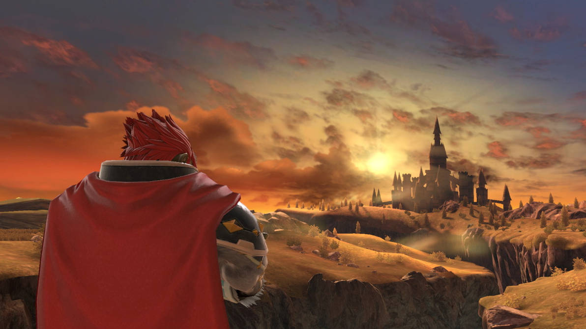
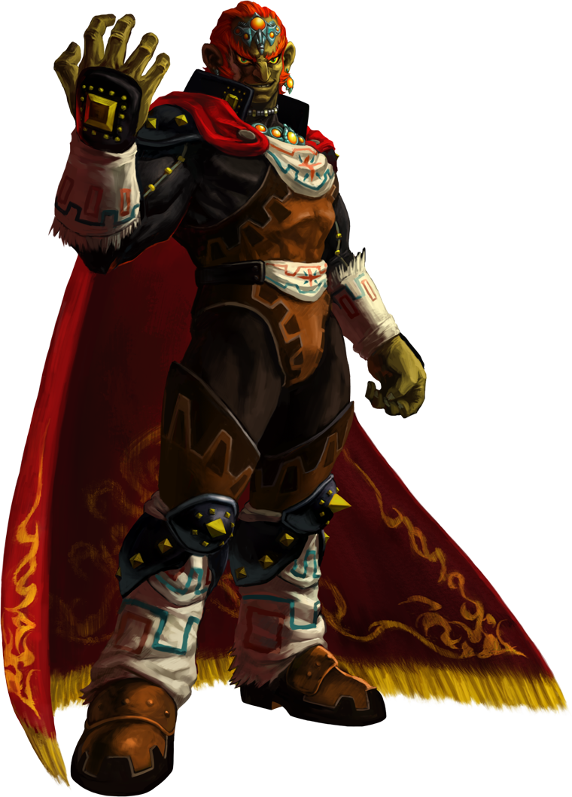
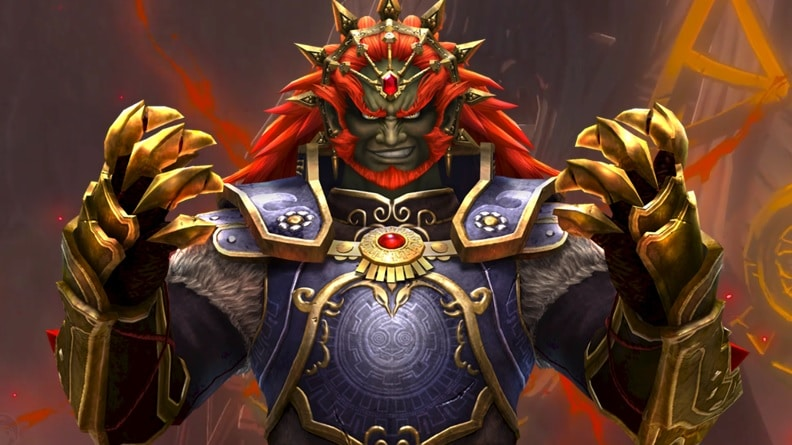

El Nacimiento de la Oscuridad
Ganondorf, el único hombre nacido en la tribu Gerudo cada cien años, estaba destinado a ser su rey. Sin embargo, su codicia lo llevó a desear las tierras pacíficas de Hyrule. El desierto era implacable, trayendo muerte y frío en la noche, mientras que Hyrule gozaba de brisas suaves y prosperidad. Esto sembró una envidia profunda en su corazón que eventualmente se transformaría en un odio inquebrantable.

Tras conseguir la Trifuerza del Poder, su humanidad comenzó a desvanecerse. Se transformó en Ganon, una bestia que encarnaba la maldad pura. A pesar de haber sido derrotado y sellado múltiples veces a lo largo de los siglos, su espíritu se niega a morir. El ciclo del héroe, la diosa y el demonio sigue girando, condenando a los tres a encontrarse vida tras vida en una batalla eterna.

